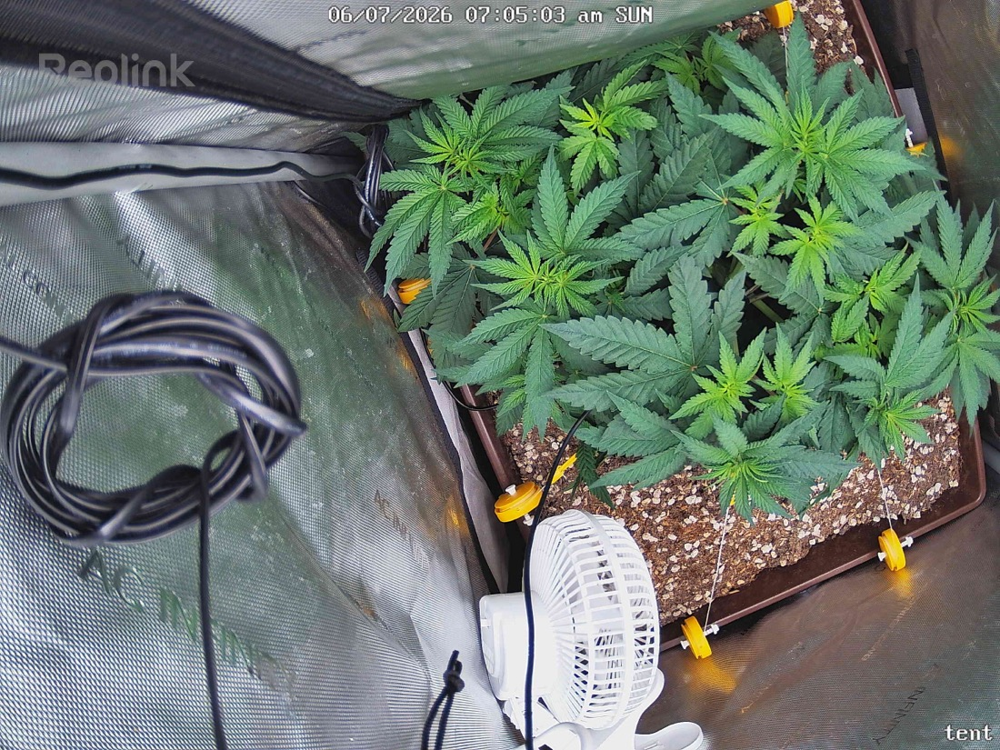

← All reports
Jun 7, 2026
Sun Jun 7, 2026 — 7:05 AM

Prognosis
Daily check-in — Day 4 of 12/12
- Growth/structure: Canopy filled in slightly more — tops are tighter and more uniform, with new light-green growth visible at multiple apical sites (good sign of stretch initiation). LST tie-down points still holding even spread across the pot.
- Color/posture: Healthy mid-to-deep green throughout, leaves flat and reaching upward, no praying/tacoing/cupping. Petioles look firm — not droopy, not stiff.
- Stress signs: None visible. No tip burn, no interveinal yellowing, no edge curl, no pest damage, no soil surface issues. Perlite mix still looks well-aerated.
- Phase check: Day 4 of flip is exactly when you'd expect stretch to begin — and you can see it. You're on schedule for a photoperiod transition; 40 days from germ to flip is on the early-but-fine side for a topped/LST'd plant in a 2x2.
Light ramp & yield questions
- Ramp schedule: Hold 500 PPFD through ~day 7 of flip (this week) while stretch starts. Then bump ~50 PPFD every 3–4 days as long as leaves stay flat: 550 → 600 → 650 by end of week 2.
- Flower ceiling: SF-2000 Pro in a 2x2 can realistically push 750–850 PPFD at canopy during weeks 3–6 of flower (peak bloom) with good VPD (1.2–1.5 kPa) and CO2-unsupplemented. 800 is the sweet spot; 900+ risks bleaching on a SF-2000 at that height. Back off to ~600 in the final 1–2 weeks of flower to preserve terpenes.
- Bud site estimate: I count roughly 8–12 viable main colas from this top-down (topped + LST'd well). Expect another 6–10 secondary sites to thicken up.
- Harvest estimate: Realistic dry yield for a single well-trained photo in a 2x2 under SF-2000 Pro: 2.5–4 oz (70–115g). Papaya Crush is a moderate-to-heavy yielder, so 3–3.5 oz is a reasonable target if the rest of flower goes clean.
Suggested next actions
- No action needed today — plant is dialed.
- Watch for stretch over the next 5–7 days; if any cola gets within ~14" of the light, raise the fixture before bumping PPFD.
- Start thinking about a light feeding (bloom-leaning amendment or top-dress) by ~day 10–14 of flip if you haven't already — living soil should carry her, but stretch is hungry.
Overall: Textbook transition — healthy, even canopy, no stress, well-positioned for a strong flower run.